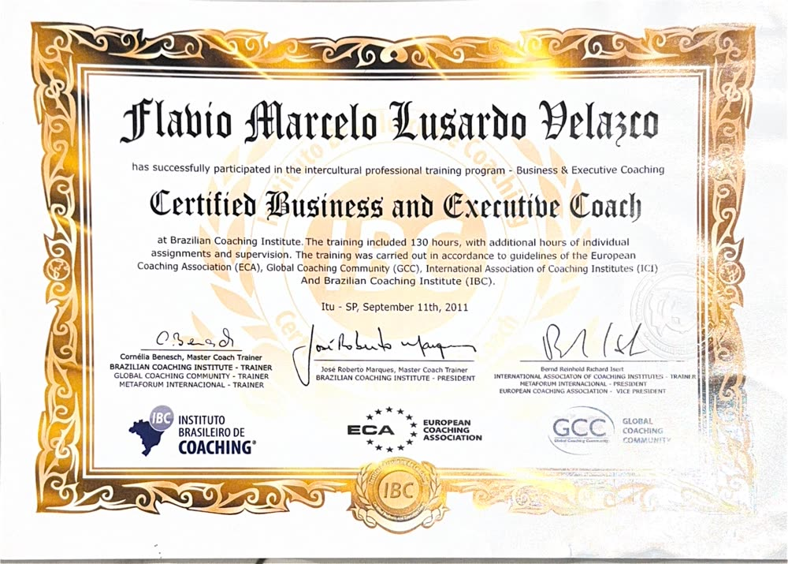
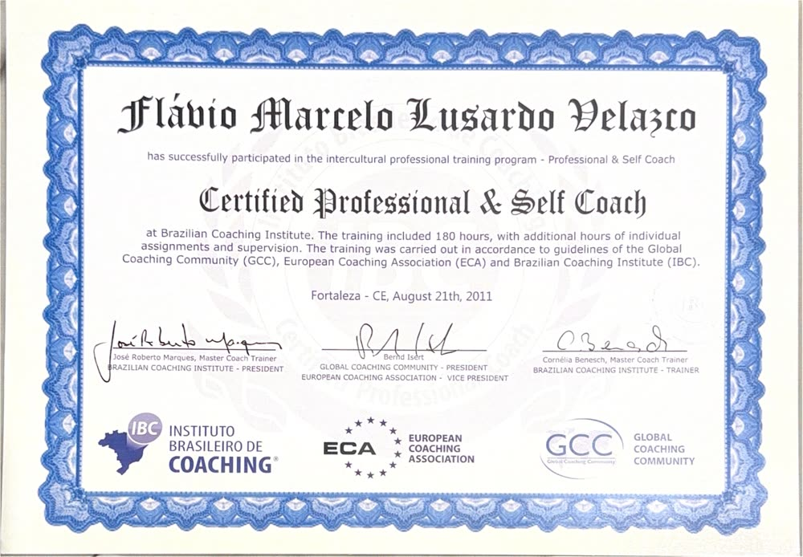
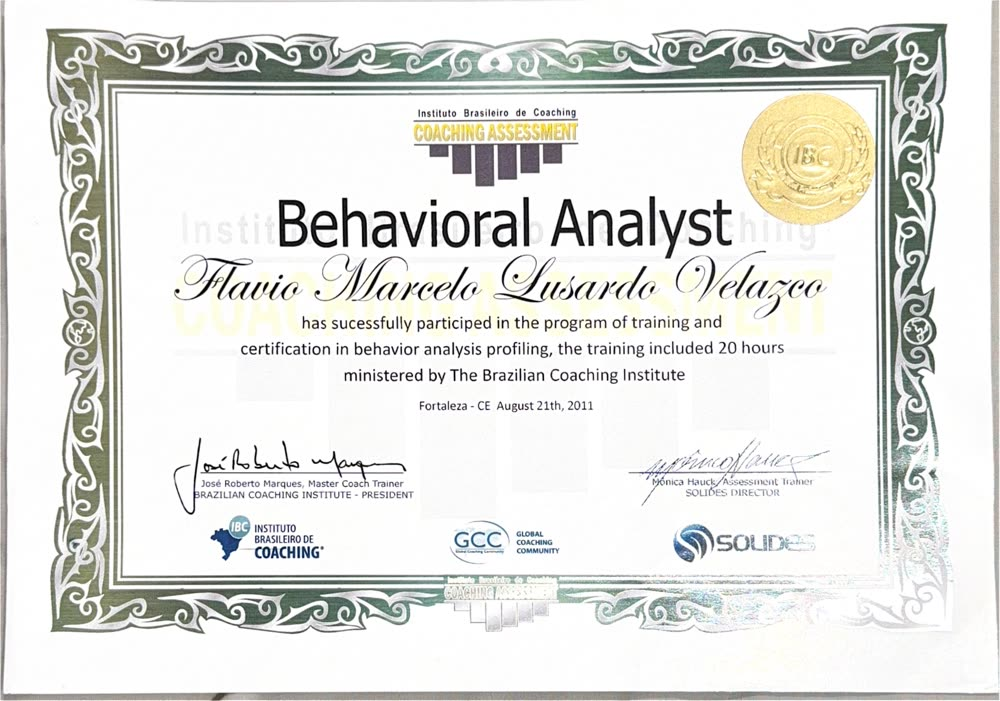
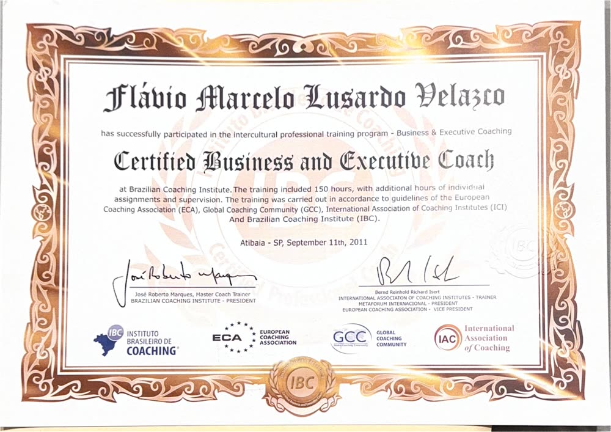
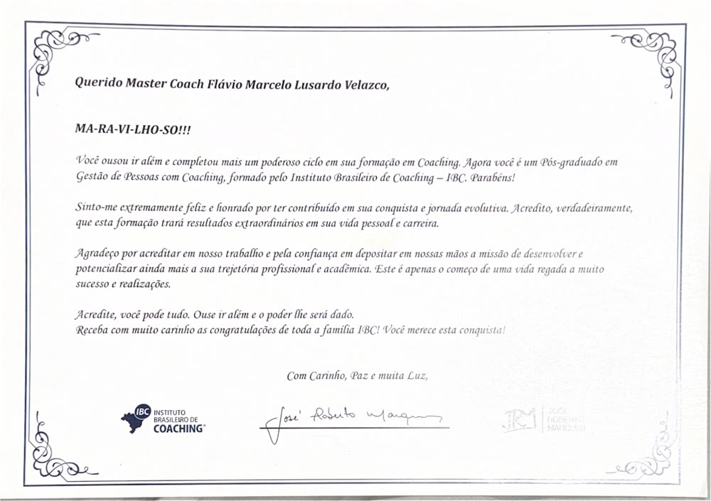
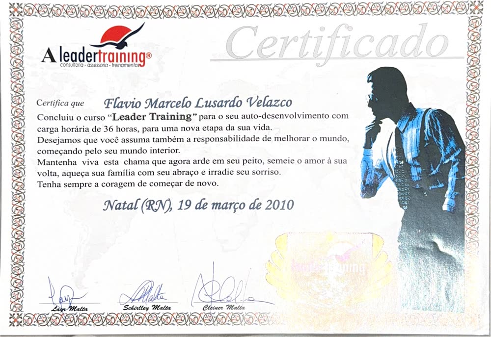
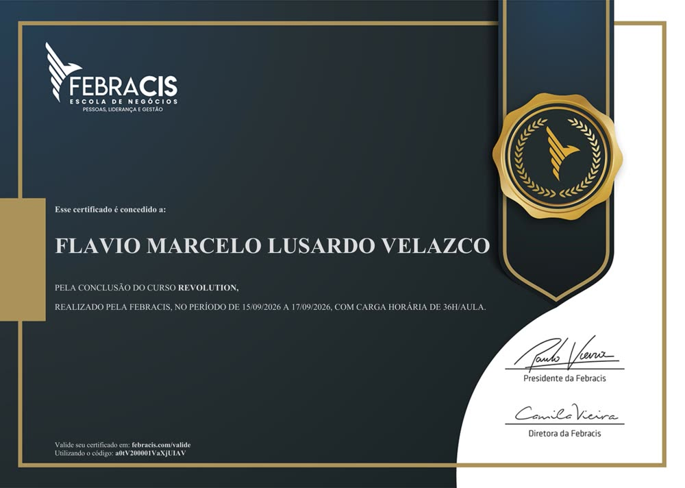

Masterclass Líder de Travessias
R$ 97
Um encontro para compreender sua travessia, identificar prioridades e conhecer a estrutura do método.
Valor sugerido, ainda sujeito a aprovação. Inscrições não abertas neste ambiente de teste.
Os vídeos originais de Joel Jota, Paulo Vieira e Jacob Petry serão restaurados na versão final. Nesta prévia, mantemos a navegação sem arquivos de vídeo locais.
A Plataforma Digital Austrália Sem Fronteiras reúne conteúdo específico para quem planeja estudar, viver ou construir sua trajetória na Austrália. É uma solução complementar — não o centro do Método Líder de Travessias.
Conhecer Austrália Sem Fronteiras →Um encontro para compreender sua travessia, identificar prioridades e conhecer a estrutura do método.
Valor sugerido, ainda sujeito a aprovação. Inscrições não abertas neste ambiente de teste.
Aprofunde seu diagnóstico, construa seu mapa estratégico e desenvolva um plano de execução com acompanhamento semanal.
Conhecer a mentoria →Inspirado na lógica de objetivos, indicadores e relações de causa e efeito do Balanced Scorecard, aplicado à estratégia de vida e à gestão de negócios.
Transição de carreira, mudanças de país, recomeços, liderança pessoal, relacionamentos, equilíbrio e propósito.
Entrega central: seu Mapa Estratégico Pessoal.Reposicionamento, crescimento, gestão, prioridades estratégicas, indicadores, equipes e execução.
Entrega central: seu Mapa Estratégico do Negócio.O Método Líder de Travessias conecta autoconhecimento à execução estratégica. Você deixa de depender apenas da motivação e passa a trabalhar com decisões, prioridades e acompanhamento.
Reconheça seus valores, forças, bloqueios e o que realmente importa nesta fase.
Defina o Estado A, o Estado B e os objetivos que merecem sua energia.
Converta objetivos em metas SMART, iniciativas e ações com responsáveis e prazos.
Acompanhe indicadores e revise o plano para ajustar a rota sem perder a direção.
Transforme mudanças em um plano claro para sua vida, carreira ou empresa. Descubra seu ponto de partida, defina objetivos e acompanhe sua evolução com um Mapa Estratégico de Travessia.
Descobrir minha próxima travessia →Quem está por trás do ecossistema
Hoje, Marcelo é sócio da Expert Education e atua diretamente no mercado de educação internacional.
Ele levou anos pra construir o acesso que agora você pode encontrar em um único lugar.
Conhecer o Método →Antes de virar ecossistema, foi um livro
Em Do Zero à Residência, Marcelo Lusardo conta a própria travessia, sem filtro e sem fórmula pronta.
"Você não precisa de respostas. Precisa atravessar."

O livro deu origem ao movimento
Todo o recurso da venda do livro é doado pra obras de caridade.
Acesso anual
R$ 1.030,00
Quero fazer parte agoraPrefere comprar só o livro, sem o ecossistema?
Certificação
Marcelo é Master Coach certificado pelo IBC, com formações complementares em Business & Executive Coaching, Professional & Self Coaching e Análise Comportamental. São mais de 500 horas de coaching desde 2010, credenciadas por entidades internacionais como European Coaching Association, Global Coaching Community e International Association of Coaching.










Reconhecimento
Marcelo recebeu o título de Imortal da Academia Independente de Letras, ocupando a cadeira nº 836, “A Travessia”.